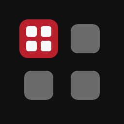
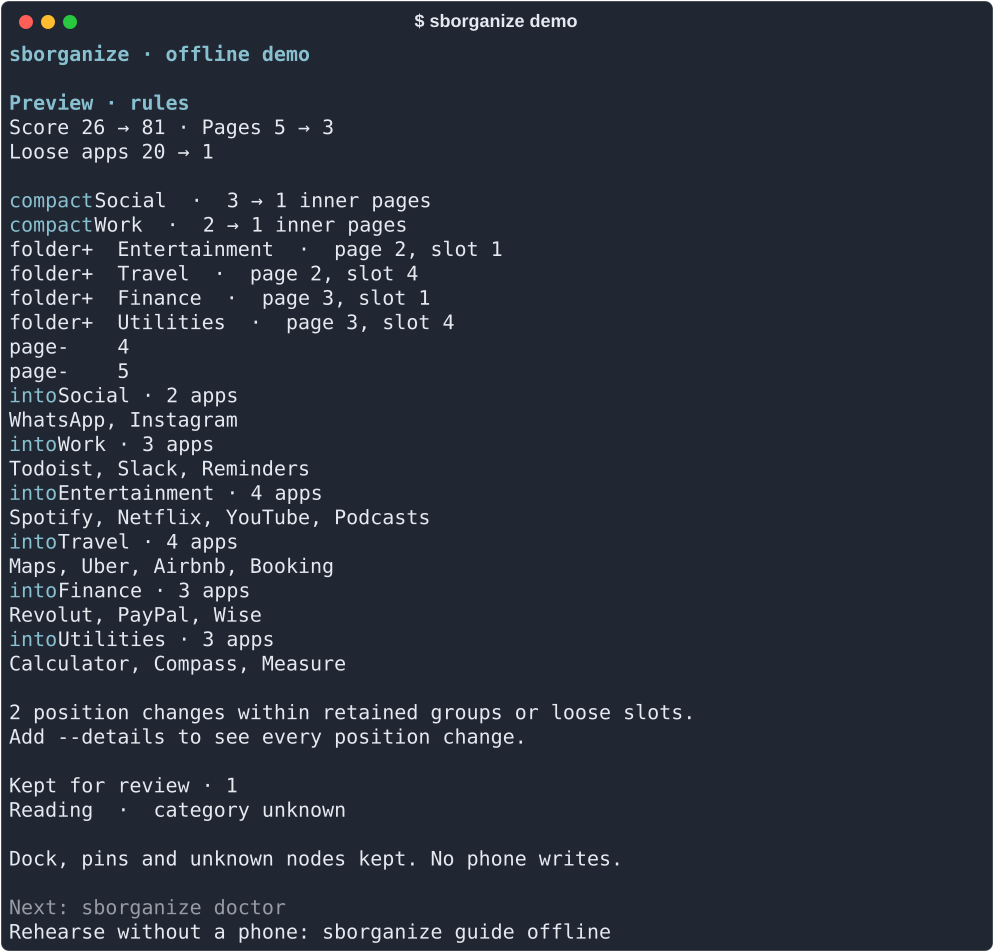

把 iPhone 连到 Mac，sborganize 会把 App 按领域整理进有用的文件夹。每一项改动都先给你看，并保留一份完整备份，随时可以回去。默认使用离线规则，不需要模型、账号或网络。

写入手机仍是实验功能。iOS 可能自行重排布局，目前完整流程只在一台开发用 iPhone 上跑通过，真机上的备份恢复还没有验证。
sborganize 只读取主屏布局：App 名称和 ID、文件夹和位置。它不会查看照片、信息、健康数据或 App 内的内容，也不会删除任何 App。方案和备份都保存在 Mac 上的 ~/.sborganize/。详见隐私说明和安全与恢复。
~/.sborganize/
用 pipx 安装，然后先试试不需要手机的演示：
pipx install 'sborganize[device] @ git+https://github.com/tangfy97/sborganize.git@v0.1.0a10' sborganize demo
然后用 USB 连接 iPhone，保持解锁，并在手机上选择信任这台电脑。sborganize guide 会带你走完剩下的步骤。
sborganize guide
问题和反馈：GitHub issues 或 hello@tang-spark.no。请不要附上方案或备份文件，里面有你安装的全部 App。